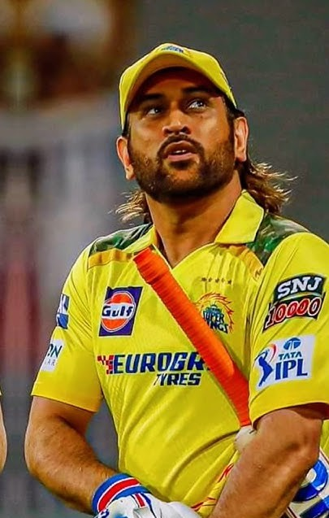
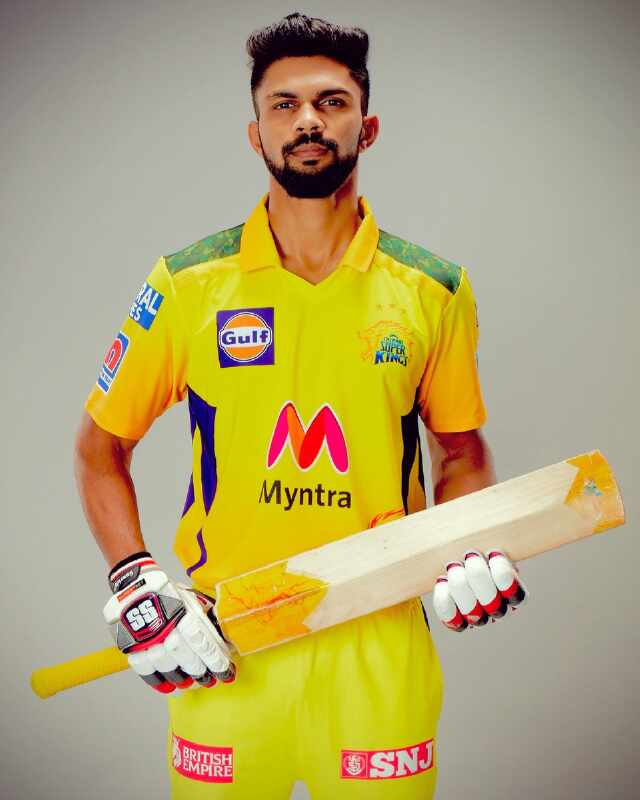
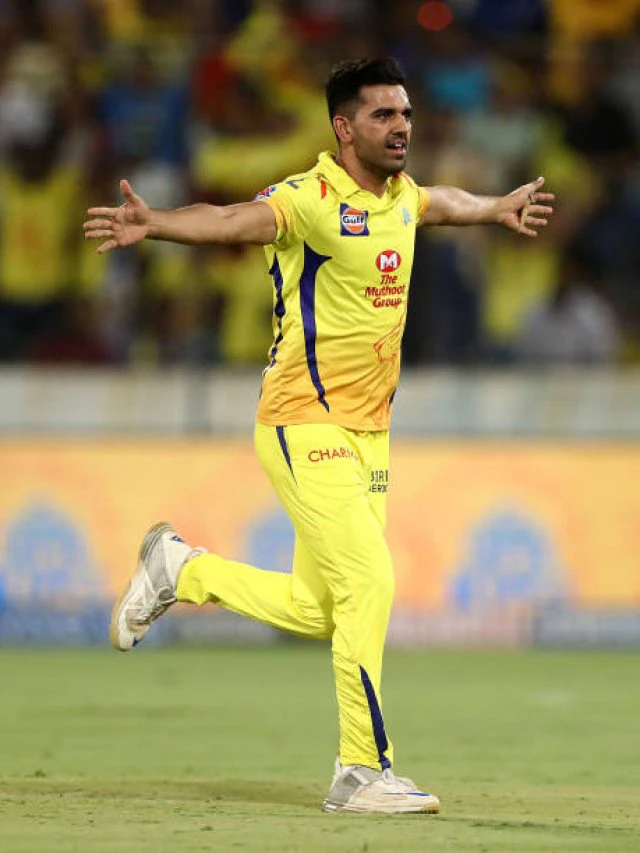

🏏 Players
MS Dhoni
Captain • Wicket Keeper
Ravindra Jadeja

All-Rounder
Ruturaj Gaikwad
Batsman
Deepak Chahar
Bowler
Your one-stop destination for CSK updates, players and fan interaction.
Chennai Super Kings (CSK) is one of the most successful franchises in the Indian Premier League (IPL). Founded in 2008, CSK is known for its consistency, strong leadership, and passionate fan base.
Led for many years by MS Dhoni, the team has won multiple IPL titles and earned a reputation for backing experienced players and playing fearless cricket.
With the iconic lion symbol and the vibrant yellow jersey, CSK represents resilience, unity, and the spirit of Chennai.
Captain • Wicket Keeper
All-Rounder
Batsman
Bowler
| Date | Opponent | Venue |
|---|---|---|
| March 24 | Mumbai Indians | Chennai |
| March 30 | RCB | Bangalore |
🗳️ Who is your favourite CSK player?
🏆 Who is the most impactful CSK player?